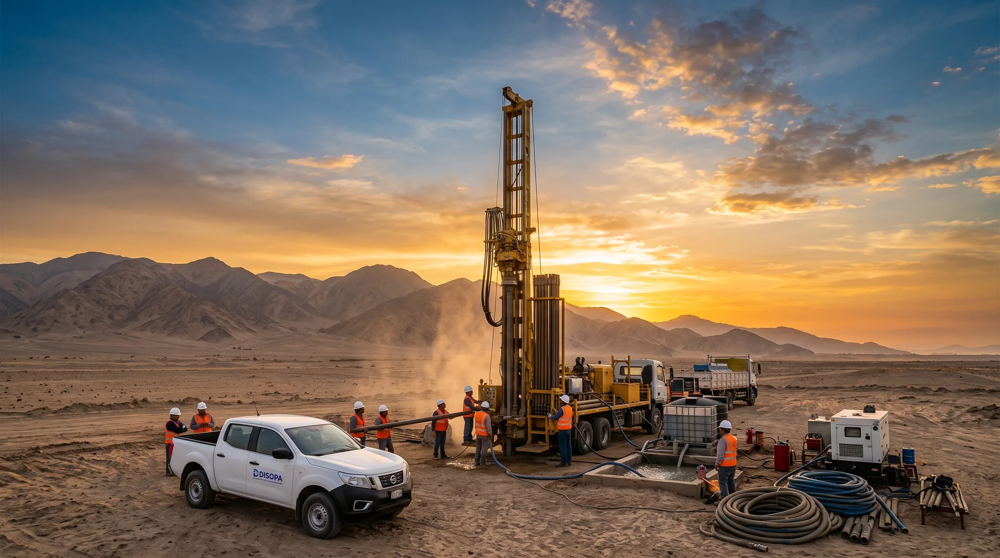
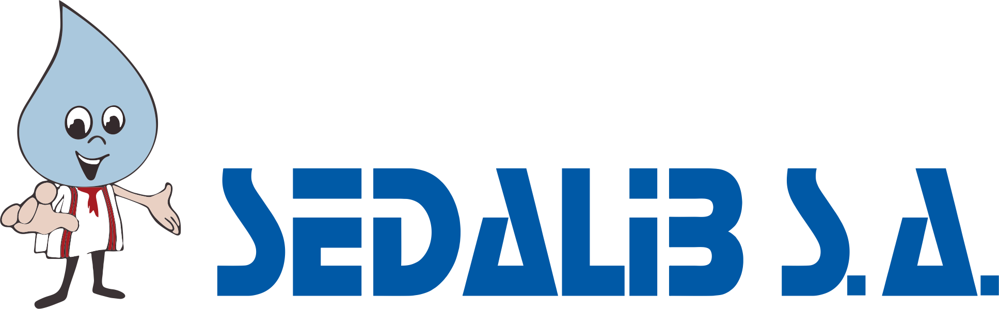
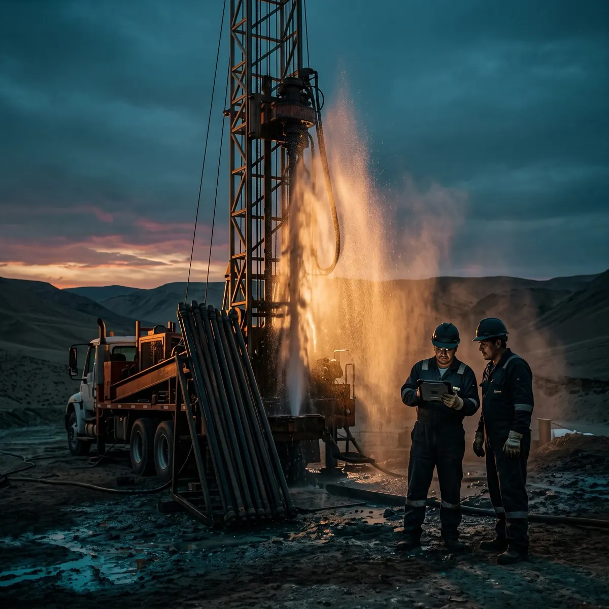

“El video mostró incrustación y nos ahorró perforar un pozo nuevo. Recuperamos el caudal a la mitad del costo.”
Agroindustria · IcaAños
en campo

Y lo inspeccionamos con cámara para que siga produciendo. Estudios, perforación, pruebas de bombeo y rehabilitación de pozos de agua en todo el Perú.
Nuestro trabajo se coordina con las entidades del sector agua del Perú

Costa, sierra y selva del Perú.
Cámara, sondas y bombas de ensayo propias.
Video y recomendaciones al cerrar campo.
Protocolos en cada intervención.
Si se puede rehabilitar, se lo decimos.
Revisamos el pozo y su historial.
Cámara CCTV y registros del pozo.
Prueba de bombeo: cuánta agua da.
Video, cálculos y plan de acción.
Rehabilitamos, equipamos o perforamos.

DISOPA es una empresa peruana de hidrogeología e ingeniería de pozos. Estudiamos, perforamos, inspeccionamos y recuperamos pozos de agua subterránea en todo el país.
“El video mostró incrustación y nos ahorró perforar un pozo nuevo. Recuperamos el caudal a la mitad del costo.”
Agroindustria · Ica“El informe nos sirvió para sustentar el expediente ante la ANA y decidir la inversión.”
Saneamiento · Municipal“Perforaron 180 metros en roca y atendieron una emergencia en menos de 48 horas.”
Minería · Sierra central“Pasamos de 18 a 30 l/s tras la rehabilitación. Dos años estables.”
Agroexportación · La Libertad“Estudio, perforación y licencia de uso de agua: todo ordenado y a tiempo.”
Saneamiento rural · Junín“La prueba de bombeo nos dijo qué bomba comprar. Dejamos de quemar equipos.”
Avícola · Lima provincias“Análisis del agua contrastado con los ECA y con recomendaciones claras de tratamiento.”
Industria · Lima“Detectaron un colapso del entubado antes de comprar el fundo. Renegociamos el precio.”
Agroindustria · Piura“Emergencia un domingo, cuadrilla en obra al día siguiente y pozo operando en 72 horas.”
Agroindustria · LambayequeEl trabajo de campo de una video-inspección estándar toma entre 3 y 6 horas, dependiendo de la profundidad del pozo y de si es necesario retirar el equipo de bombeo. Si además se ejecuta una prueba de bombeo a caudal constante, la campaña se extiende entre 24 y 72 horas. El informe técnico final se entrega dentro de las 72 horas siguientes al cierre del trabajo en campo.
Sí. En el Perú el agua subterránea es un recurso regulado por la Autoridad Nacional del Agua. Antes de perforar se requiere la autorización de ejecución de obras de aprovechamiento hídrico y, una vez concluido el pozo, la licencia de uso de agua correspondiente al destino que se le dará. Nosotros preparamos el expediente técnico y acompañamos el trámite.
Las señales típicas son la caída progresiva del caudal, el aumento del consumo eléctrico de la bomba para el mismo volumen, la presencia de arena o turbidez en el agua y el descenso del nivel dinámico. Ojo: esos síntomas también aparecen cuando el problema está en el acuífero o en el equipo de bombeo, no en el pozo. Por eso la inspección se hace primero — es lo que distingue un pozo incrustado de un acuífero agotado, y son dos inversiones muy distintas.
El video íntegro de la inspección con referencia de profundidad, capturas de los hallazgos relevantes, el perfil del pozo con la ubicación de tubería ciega y filtros, la memoria de cálculo de la prueba de bombeo (caudal específico, abatimiento, eficiencia y parámetros del acuífero), el diagnóstico del estado con clasificación de severidad y un plan de acción priorizado por costo e impacto.
Recomendamos una inspección cada 2 o 3 años en condiciones normales de operación, y anual en pozos con agua de alta dureza, alto contenido de hierro o régimen de bombeo intensivo, donde la incrustación avanza más rápido. También conviene inspeccionar siempre antes de comprar un predio con pozo o antes de invertir en un nuevo equipo de bombeo.
Sí, operamos en 18 regiones del país con logística propia, incluyendo zonas de difícil acceso en sierra y selva. Para trabajos fuera de Lima la cotización incluye de forma explícita movilización, desmovilización y estadía de la cuadrilla, sin cargos posteriores no informados.
Evaluación preliminar y cotización sin compromiso.
Dos pasos, menos de un minuto.
Le respondemos en menos de 24 horas hábiles. Sus datos solo se usan para atender su solicitud.